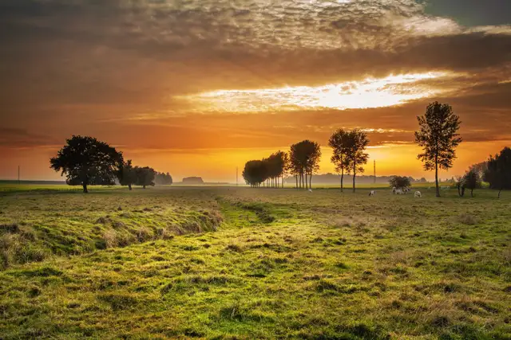

Sunset over the fields
Tap again to close. Sample photos from Lorem Picsum, sourced from Unsplash.
This is what a frame shows. Arrows change photos; tap one for its details.
The demo needs JavaScript to change photos. Back to OpenMantel